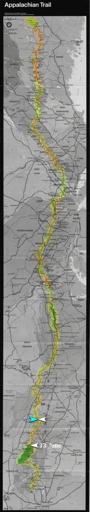

| Home | The Fox | Statistics | Maps | Churches |
StatusConfirmed - Reached Dennis Cove, TN on 22 June 1998Confirmed - 402.5 miles complete (18.59%) Confirmed - 1763.0 miles to go (81.41%) The Fox Makes Church, Reaches Dennis Cove[22 June 1998] On Sunday a couple contacted us who were supposed to have given the Fox a ride to church, after the Fox's original ride had to attend a missions trip. After having trouble finding the trail crossing, they waited at the intersection as long as their duties allowed before giving up and going on to church without him. They thought they had found the right intersection, and we speculated that the Fox might have been delayed by incliment weather.Just minutes ago (around 6:30pm) the Fox contacted us. He has reached Dennis Cove where he will probably spend the night; this places him about ten miles behind schedule, from which he hopes to recover by the end of the week. His right knee has been sore and he attributes his setback to several days of difficult climbing. Despite these problems he is reported to be in excellent spirits. And the Fox revealed to us what happened Sunday morning: he accidentally passed the spur leading to the rendevous, and upon retracing his steps he found no ride, and a call to the church yielded only the answer that it was too close to the start of service for someone to make it to his location and back again. Fortunately the intrepid Fox was able to call another church where someone was able to give him a ride. He apparently enjoyed this second church a lot, proclaiming his Sunday `delightful'. The Fox at Hot Springs[15 June 1998] This evening the Fox contacted us from Hot Springs, North Carolina, where he caught up with NaPensee and Ziad Mohamed at a motel where all three spent the night. Due to engagements earlier in the day on Saturday, the Fox had stared his hike at 6:20pm, several hours later than the other two. (he was carried to Davenport by Russ Haley). So while the other two reached the hotel around about noon, the Fox did not reach it until 4:45pm.The Fox has kept to schedule so far, reported good health, and seemed to be in good spirits. |

Legend
|